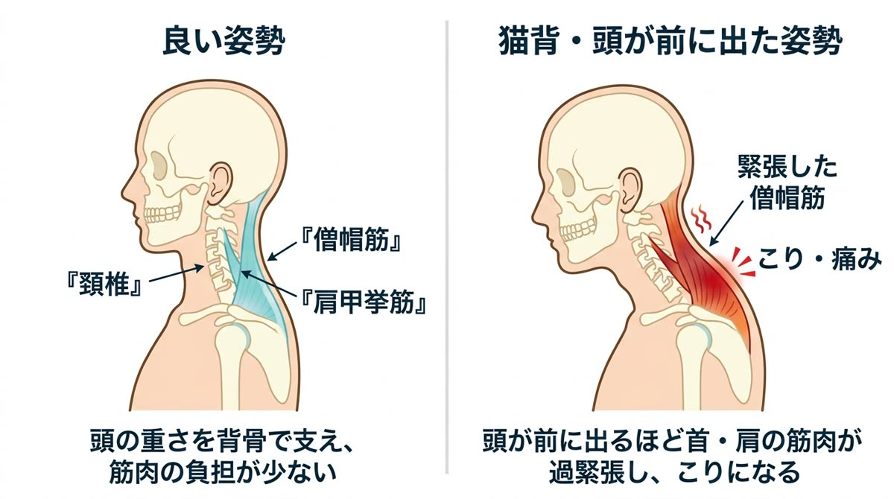

「揉んでもらった直後はラクなのに、数日で元通り」——それは、肩こりの原因がまだ残っているサインです。
ひとつでも当てはまった方は、このまま読み進めてください。あなたの肩こりが「なぜ治らないのか」が、きっと見えてきます。

肩こりの最大の原因は、長時間続く「悪い姿勢」です。
人間の頭の重さは体重の約10%。体重60kgの方なら、約6kgの頭を細い首と肩の筋肉で一日中支え続けていることになります。正しい姿勢なら背骨全体でバランスよく支えられるのですが、猫背やスマホをのぞき込む姿勢では、頭が前に突き出た状態になります。
頭が前に2〜3cm出るだけで、首や肩の筋肉にかかる負担は2倍以上になるといわれています。この状態が毎日何時間も続けば、筋肉は休む間もなく緊張しっぱなし。血流が悪くなり、疲労物質が溜まって「こり」と「痛み」に変わっていくのです。

実は、猫背の多くは首や背中だけの問題ではありません。骨盤が後ろに倒れると、背骨は自然と丸まり、頭は前に出ます。つまり、肩こりの根っこが「骨盤」にあるケースが非常に多いのです。ここをケアしないままマッサージだけを繰り返しても、身体はすぐに元の悪い姿勢に戻ってしまいます。

大切なのは、次の3ステップです。
① まず、あなたの姿勢・骨盤・肩甲骨の状態を正確に把握すること。原因が人によって全く違うからです。
② 硬くなった筋肉をゆるめるだけでなく、歪みそのものを矯正すること。ここを飛ばすと必ず再発します。
③ 整った状態をキープできる身体と生活習慣をつくること。デスク環境やセルフケアまで含めて初めて「根本改善」です。

いつから・どんな時につらいのか、お仕事や生活習慣まで丁寧にお伺いします。肩こりの原因は人によって全く違うため、ここに一番時間をかけます。

姿勢分析で骨盤の傾き・頭の位置・肩甲骨の動きをチェック。お身体の状態を画像でわかりやすくご説明し、納得いただいてから施術に入ります。

筋肉をゆるめてから、骨盤矯正・猫背矯正・肩甲骨はがしで原因を整えます。最後にご自宅でできるセルフケアとデスク環境のアドバイスまでお伝えします。

慢性的な肩こりは保険適用外のため、自費メニュー（骨盤矯正・猫背矯正・肩甲骨はがし等）でのご案内になります。寝違えなど急性の痛みは保険が使える場合がありますので、カウンセリング時にご確認ください。
個人差はありますが、長年の姿勢のクセが原因の場合、初期は週1〜2回の集中ケアで変化を定着させ、その後2週間〜1ヶ月に1回のメンテナンスへ移行する方が多いです。初回の検査で目安の計画をご提案します。
マッサージは硬くなった筋肉を一時的にほぐすもの、当院の施術は肩こりを起こしている原因（骨盤・背骨の歪みや肩甲骨の動きの悪さ）そのものを整えるものです。だから戻りにくいのが特徴です。